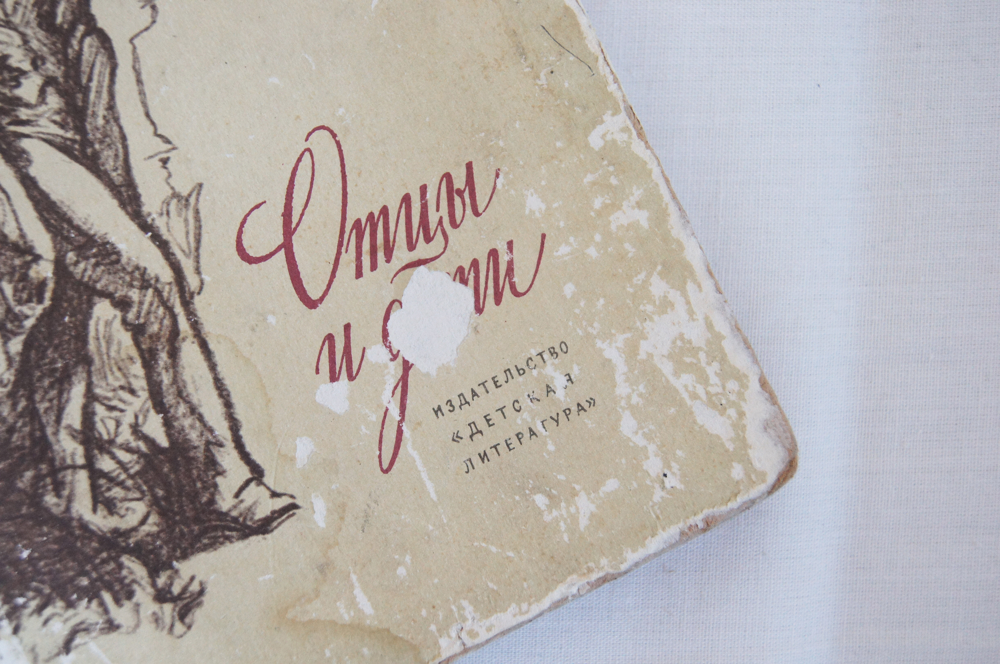

Сегодня, 4 октября, — день рождения моей подруги Леры, которой исполнилось 18 лет. Мы с друзьями устроили ей сюрприз и подарили ей коробку приятных воспоминаний, наполненную фотографиями, рисунками и пожеланиями. Но кроме того, сегодня также была премьера фильма "Кислота" Александра Горчилина. Именно поэтому день рождения мы отпраздновали походом в кино. Этот фильм я смотрела уже второй раз, поэтому он стал для меня понятнее, разъяснились многие вопросы, которые у меня оставались после первого просмотра. Одной из ключевых проблем, затрагиваемых в фильме, является проблема "отцов и детей", именно поэтому этот день у меня ассоциируется с одноименным романом И.С. Тургенева.
